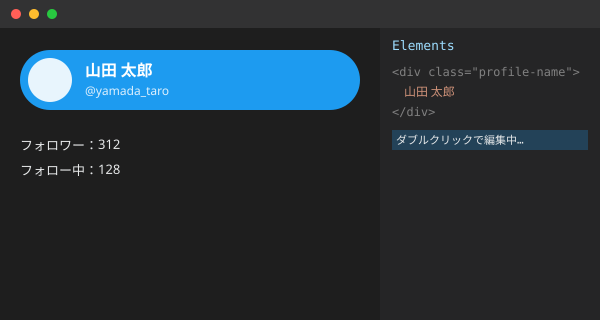

𝕐
ホーム
話題を検索
通知
3
メッセージ
Yアシスタント
ブックマーク
リスト
プロフィール
もっと見る
ポストする
Yプレミアムに登録
購読して新機能を利用しましょう。対象の場合、広告収益を受け取れます。
登録する
山田 太郎
@yamada_taro
ホーム
おすすめ
フォロー中
いまどうしてる？
山田 太郎
@yamada_taro
· 3時間
今日の所持金、なんと
1,200円
でした。節約がんばる💪
12
4
58
2,401
返信する
山田 太郎
@yamada_taro
· 昨日
プロコン部で文化祭用のWebアプリが完成した！みんな見に来てね🎉
3
9
41
980
返信する
鈴木 花子
@hanako_suzu
· 2日
オープンキャンパス楽しみ！体験授業でなんちゃってハッキングやるらしい👀
7
2
23
512
返信する
佐藤 次郎
@jiro_sato
· 3日
DevTools使うと画面の見た目って簡単に書き換えられるんだね、面白い。

5
1
17
309
返信する
山田 太郎
2件のポスト
プロフィールを編集
山田 太郎
@yamada_taro
プロコン部 部長／高校生／ポテトサラダとコードが好き🥔💻
文化祭ではWebアプリを展示しました！
📍 どこかの高校
📅 2024年4月からY利用
128
フォロー中
312
フォロワー
ポスト
返信
メディア
いいね
山田 太郎
@yamada_taro
· 3時間
今日の所持金、なんと
1,200円
でした。節約がんばる💪
12
4
58
2,401
返信する
山田 太郎
@yamada_taro
· 昨日
プロコン部で文化祭用のWebアプリが完成した！みんな見に来てね🎉
3
9
41
980
返信する
トレンド
プログラミング · トレンド
#なんちゃってハッキング
1,204件のポスト
学校 · トレンド
#オープンキャンパス
856件のポスト
部活動 · トレンド
#プロコン部
312件のポスト
テクノロジー · トレンド
#DevTools
98件のポスト
おすすめユーザー
鈴木 花子
@hanako_suzu
フォロー
佐藤 次郎
@jiro_sato
フォロー
通知
すべて
言及
鈴木 花子
さんが、あなたの投稿「今日の所持金、なんと1,200円でした」に「いいね」しました
佐藤 次郎
さんが、あなたの投稿をリポストしました
鈴木 花子
さんにフォローされました
佐藤 次郎
さんが、あなたの投稿「プロコン部で文化祭用のWebアプリが完成した！」に「いいね」しました
鈴木 花子
さんがあなたに返信しました：「楽しみすぎる！」
全員が返信できます
プロフィールを編集
名前
自己紹介
アイコン画像のファイル名（images/フォルダ内）